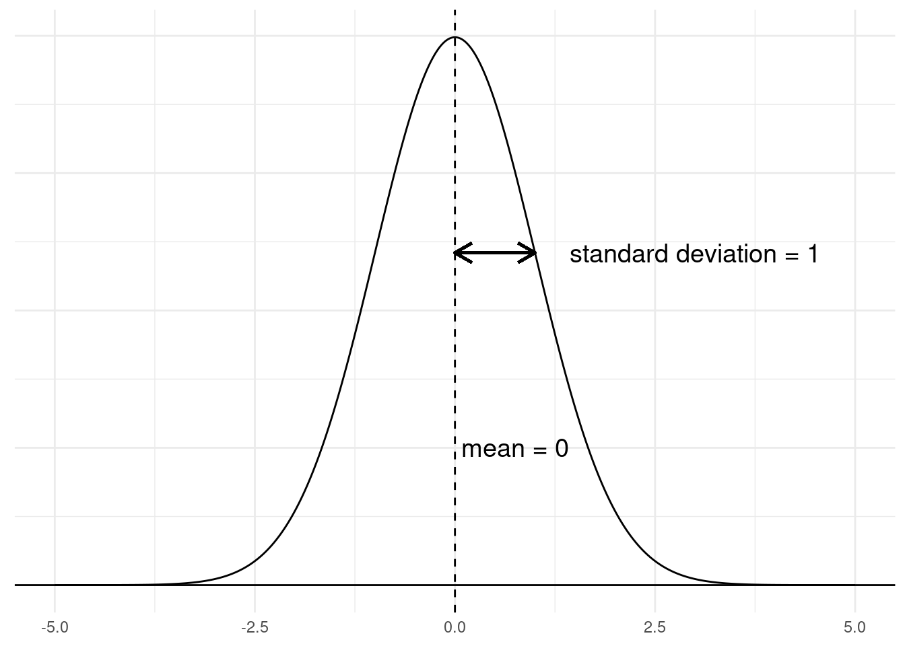
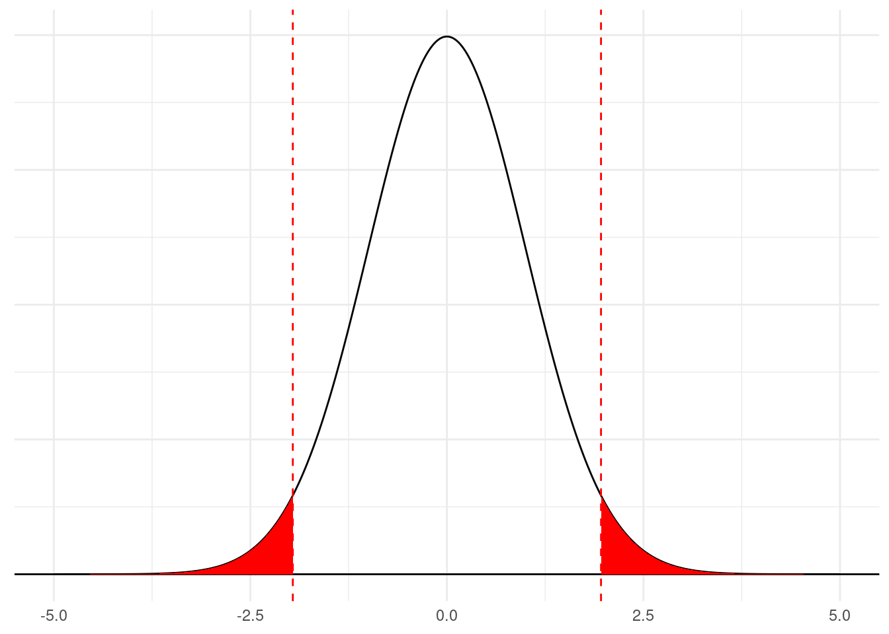

Unit 5 Concepts Reading: Inference and Hypothesis Testing
What’s in this reading?
In Unit 3, we learned how to fit simple linear models, which provide a basis for making predictions and describing relationships between variables. In Unit 4, we learned more about how to examine and compare models, to help us decide whether a particular model seems to be a “good enough” model, and which model seems to be “better” than another.
The final step we will take in this course is to consider how to quantify uncertainty and draw conclusions from models. We saw in Unit 4 that even if we have a “good” model, there is still remaining “noise”, as represented by residuals. This means that even though we can make predictions that are far better than simply guessing, we may still have plenty of uncertainty in our models. In the current Unit, we will learn about how to quantify our level of uncertainty, and how we can use statistics to draw valid conclusions.
I will call attention to key terminology with margin notes. I will also ramble about side thoughts in margin notes as well. Sometimes the margin notes will be numbered,1 like footnotes that connect to a specific part of the main text. Sometimes they’re unnumbered, just hanging out whenever you feel like reading them.
1 This is a numbered side-note.
This is a margin note.
Interspersed in the text below are some Knowledge Checks for quizzing yourself. I encourage you to attempt to answer these as you encounter them, to help force yourself to process and understand the material more thorougly. After working through this entire page, make sure you answer these questions in the Unit 5 Knowledge Check Quiz on ELMS. I recommend writing your answers down in notes as you work through this page, and then just referring to your notes to review and provide answers when you take the quiz on ELMS. This is built-in way for you to review the material as you go.
If you have questions, reach out on the course Discord, and/or come to an Open Discussion Zoom session.
Happy reading!
Statistical inference
So far, this course has emphasized exploratory data analysis. We have visualized data, we have compared empirical distributions to theoretical distributions, we have estimated simple regression models, and we have examined the patterns of predictions and errors from those models. This is all useful, and necessary towards understanding data and what we might be able to uncover in a data set.
But ultimately, we would like to take action and make decisions based on data, and for that, simple exploration is not enough. We need to think carefully about how to draw valid conclusions, or inferences from the patterns we are seeing. Sometimes this process is called confirmatory analysis or inferential analysis, to contrast with exploratory analysis.
Example: drug testing
To help illustrate the difference between exploratory and confirmatory, let’s imagine we are involved in a study testing the effectiveness of a new drug. We give the drug to ten people, and there are ten other people that we don’t give the drug to (i.e., a control group), and we collect data from both groups.
In the test group, five (out of ten) people recover within a week, so that seems promising. But then in our control group (the ones without the drug), three people (also out of ten) recover on their own in the same amount of time.
Was the drug helpful, or not?
We know that five is more than three, so we might think that the drug could be effective, and we could even say something like “the recovery rate with the drug was 67% higher than without the drug.” That sounds like a clear result!
But what if we just got “lucky”? At the end of the day, it’s only ten people in each group, and maybe if we tried this experiment again with another twenty people, we might not see the exact same pattern of results.
How can we tell if the drug is actually helpful, or if the treatment group was just a little luckier than the control group?
Inferential statistics helps us quantify uncertainty
This worry is all due to the uncertainty in our result. We observed some data, but given that it was only a few cases, we’re still uncertain about whether the pattern will be consistent if we give the drug to more people.
If you think about it, you can start to see this kind of uncertainty everywhere. This is simply a fact of life – we are surrounded by uncertainty. Statistics to the rescure, right? Well, sort of.
It’s a myth to think that just because we are using numbers and math, that we are somehow guaranteed to arrive at a level of certainty. It’s more accurate to think of the role of statistics as helping us to quantify and understand our uncertainty, and that’s often the best we can do.
For example, just quoting a number like “this drug improved outcomes by 67% (going from 30% recover to 50% recovery)” doesn’t necessarily mean that this is a number we can trust. Proper statistical analysis can help us quantify how certain we are about our estimates. So instead, we might say something like “without the drug, the chances of recovery are likely somewhere between 2% and 60%, and with the drug, the chances are likely between 20% and 80%.” Sure, if you were forced to pick one, you’d go with the overall higher chances, but with this level of overlap and uncertainty, it could easily be the case that the drug actually makes recovery less likely! Presenting the statistical uncertainty is an important part of understanding and making better decisions.
In other words, in statistics as in life, we need to learn to embrace uncertainty and try to understand it, instead of pretending that we can get rid of it, or pretending that it doesn’t exist.
In the rest of this unit, we will develop some tools that will help us begin to quantify uncertainty, which can in turn equip us to make better decisions using data.
Null Hypothesis Significance Testing
The significance of “significance”
One of the dominant paradigms for statistical inference is the so-called Null Hypothesis Significance Testing (NHST) framework. This approach is still really rather recent in the scheme of things, and it really came into its own in the mid-20th century, especially due to the influence of the statistician Ronald Fisher.
However, it is also deeply problematic, and its influence has contributed to both successes and crises in modern science, particularly in the social and behavioral sciences.2 So why should we bother learning this, if it’s flawed? Two reasons:
2 One of the most prominent is the replication crisis. You can’t blame NHST for this completely, but a combination of the use of NHST along with various social, economic, and methodological pressures on scientists has had the result that many “cornerstone” findings of some fields have turned out to be much less reliable than previously believed.
- It’s hard to read any research with statistical analysis in the last hundred years without encountering it.
- It has yet to be replaced by a universally accepted alternative.
You could also ask why I would even tell you that this framework has problems if I’m not going to teach you an alternative,3 and that would also be a fair question. Three reasons:
3 If you’re curious, two distinct frameworks for statistical inference that don’t depend on NHST include Bayesian data analysis and Information-Theoretic analysis. Most of the textbooks for these are fairly advanced, but McElreath’s (2020) Statistical Rethinking and Burnham and Anderson’s (2002) Model Selection and Multimodel Inference are places to look for more information, respectively.
- Simply because it has been so dominant, learning the concepts of NHST and how to perform it and understand it is useful, and if it’s used appropriately, it can be a valid and powerful tool.
- I want you to understand that there are alternatives, so if you hate NHST, that doesn’t mean you you can’t still love data analysis and statistics.
- If you find the logic of NHST difficult, that’s okay, because so do many many working scientists! (Misunderstandings are one of the major problems.)
As we proceed, I will point out some of the pitfalls and problems with the approach, but again, the purpose is to give you some awareness, not just to put down the approach. Let’s look at how NHST works, and how to use it to draw conclusions from our regression models.
Knowledge Check: True or False: null hypothesis significance testing has been around for centuries.
The logic of NHST
Here’s a brief walkthrough of the logic of NHST:
- We gather data, make some observations, but we worry that a pattern we observe (like a difference between treatments, or a slope in a regression) might be simply the result of “dumb luck” or “pure chance” rather than something consistent that we can rely on.
- We set up a null hypothesis to express the idea that “it was just pure chance.”
- Based on our model and our data, we calculate a test statistic whose distribution is mathematically understood if the null hypothesis is true.
- We calculate a p-value, which we can interpret as how surprising the data would be if the null hypothesis were true.
- We check to see if our p-value is lower than an arbitrary cutoff that we decided in advance, and if it is, we declare the result to be “statistically significant.”
- With a significant result, we can thereby reject the null hypothesis as being unlikely and give our support to an alternative hypothesis. Without a significant result, we don’t “prove” the null hypothesis, but we simply can’t rule it out.
- Profit?
Let’s walk through each of these steps in turn.
Step 1: the worry of chance
We touched on this already in our drug treatment example. Another example might be looking at the impact of study time on a test score. Maybe we want to know how much study time seems to affect scores, because if we knew that every hour was likely to boost our score by 20 points, we might have a different level of motivation or make different plans than if we knew each hour of studying might only improve scores by a point or two.
Imagine then that we ask five students to record their study times and their test scores. How could we tell if we could trust whatever pattern emerged, with only five students? What if the students who studied hard also had bad luck with some test items, making it look like studying was less important than we thought? Or what if studying looked like it helped, but it just turned out that the people who studied just happened to be luckier on test day?
Knowledge Check: Can you think of another example where uncertainty might make us question whether a result was “real” or not?
Personally, I would encourage you to not fall into the trap of thinking of results as either “real” or “illusions of chance.” This is one of the traps of NHST, making you think that results are binary, either significant or not. We should still be concerned about evaluating our uncertainty, but it’s better to think about “how sure can we be?” about a result instead of wondering if it’s “real or not” as a binary choice.
In other words, while traditional NHST boils down the choice between “significant”/“real” and “by chance”/“illusory”, in actuality we simply have data and estimates, with differing levels of uncertainty.
Step 2: the null hypothesis
The concept of a null hypothesis is a key element of NHST, as the name suggests. Intuitively, we can relate to it as the hypothesis that “X doesn’t make a difference.” For example, in a drug test trial, the null hypothesis is the hypothesis that the drug doesn’t make a difference to patient outcomes. Or in the study time example, it would be the hypothesis that study time doesn’t affect test scores.
However, the null hypothesis is actually a little more precise than this way of thinking, because it represents the hypothesis that a given effect is exactly zero. For example, it’s not just the idea that the drug “doesn’t help”, it’s the idea that the effect of treatment is exactly zero. And if we looked at a regression of study time predicting test scores, the null hypothesis isn’t just that study time doesn’t help, it’s the hypothesis that the slope in our regression should be exactly zero.
The reason this can be problematic is that in some ways, the null hypothesis is a kind of “straw man” argument. Who really believes in the null hypothesis? Why would we think that the effect of study time is exactly zero?
In defense of the null hypothesis, it doesn’t have to be interesting in order to be useful. That is, even though it’s not really a hypothesis that people are out to test or prove, it’s a framework for thinking about the alternatives. It’s a core part of the logic that we construct in order to interpret NHST, because it acts as a clear contrast to whatever it is that we’re actually trying to test.
So in practice, we get a little creative with how we set up our experiments and tests, so that if we are able to “rule out” the null hypothesis, that implies something interesting and important must be the alternative.
Back to our example, what we really might want to know is “does this drug help?” But if we are using NHST, what we need to do is to frame our question slightly differently, to ask “are our results consistent with the null hypothesis?”
Knowledge Check: You are comparing weight loss data from two different diets. How might you phrase the null hypothesis that you are testing?
Step 3: test statistics
While I am being pretty negative about NHST, the last thing I want to do is give you the impression that statisticians who develop and practice NHST methods are not smart people. On the contrary, the people who developed and continue to develop the math and statistical practices that underlie NHST are extremely clever people.
One of the brilliant achievements of some of these folks has been the mathematical discovery and development of statistics whose probability distributions are known under the null hypothesis. What this means is that for many analyses, there are certain special statistics that you can compute, and we have mathematical and computational methods for describing the distributions of those statistics, just like we have already discussed with the normal and uniform distributions.
What’s special about these statistics and their distributions is that they can be shown to depend on the null hypothesis being true. For example, think about the slope parameter from our regression models. There is another quantity called the standard error, and if you divide a slope estimate by its standard error, you get a t score (or t-value), and t values have a special distribution under the null hypothesis.4 In other words, if the “true” slope in our regression model is exactly zero (the null hypothesis), then we know that the value that we get by dividing the slope by its standard error follows a t distribution.
4 Unsurprisingly, it’s called the “t distribution”.
The upcoming Code Tutorial on computing standard errors and t-values explains how to easily compute or find these in R.
Why is that helpful? That’s where we move to step 4.
Step 4: compute a p-value
Recall the normal (aka Gaussian) distribution from Unit 2. Recall also that one special version of the normal distribution is called the standard normal distribution, specifically when the mean is 0 and the standard deviation is 1. We can visualize this below:
Despite the limits of this graph,5 the normal distribution does not have any limits, so it’s possible to get very large positive or negative numbers with this distribution, but they are rare. Imagine you were getting numbers from this distribution and you pulled a value of 4.75. How surprised should you be? How rare is it to get this high of a value from this distribution? Well, it turns out that in a standard normal as shown in the graph above, a value of 4.75 is literally one in a million! That is, only about one out of every million numbers that you sample from this distribution would be 4.75 or higher.
5 There is a horizontal line drawn at \(y = 0\) in the graph, and the density line of the distribution gets so close to it (around +/- 3.7) that it looks like the line goes all the way to zero. But this is just the thickness of the lines in the graph; the distribution never quite reaches zero probability.
A less extreme value is 1.96. It turns out that only around 2.5% of values from a normal distribution are larger than 1.96, and because this distribution is symmetrical, only about 2.5% of values from a normal are more negative than a value of -1.96.
This is what we mean we talk about calculating the “surprise value” for a test statistic. We would be relatively surprised to see a value of +/- 1.96, but much more suprised to see a value of +/- 4.75, when those values are coming from a standard normal distribution.
The statistic we use to express this “surprise value” is called a p-value. More precisely, a p-value tells you the probability of seeing a result at least this extreme, when the null hypothesis is true. This means that very low p-values represent results that are surprising for the null hypothesis.
We can visualize an example of a p-value by considering those cut-off points of -1.96 and 1.96 mentioned above. A test statistic that follows a standard normal distribution is called a z-score. So if we got a z-score of 1.96, that would correspond to a p-value of around 0.05. But why 0.05, when we just said that only 2.5% of the values are as large or larger than 1.96? Shouldn’t it be 0.025 (2.5%)?
Under NHST, we usually consider both extremes: the chances of getting a very high or very low result. So if we talk about p < 0.05, what we usually mean is that there’s only a 5% probability of getting a value this large, negative or positive. So we combine the 2.5% chance of getting a number higher than 1.96 with the 2.5% chance of getting a number lower than -1.96, and we end up with an overall 5% chance. Written in decimals rather than percents, this is 0.05.
We can visualize this in the graph below. The red sections indicate the higher 2.5% and lower 2.5%, which are outside the 1.96 and -1.96 cutoffs, respectively. Put together, those red sections add up to 5% of the distribution. So when we say we have a p-value less than 0.05, we mean that the test statistic6 is extreme enough to fall into one of the red zones, which extend outward beyond the limits of this graph.
6 And just to be clear: different test statistics have different distributions. The z-score is the name of the test statistic that follows a standard normal distribution.
When we consider both extremes (high and low), we call this a two-tailed test, because we are looking at values in either “tail” of the distribution. This is the standard interpretation of most tests. Performing “one-tailed” tests usually requires extra justification that you only care about results that are either higher or lower than expected.

We will go through the calculation of all of these statistics in the Code Tutorial on p-values, but the point of this step is to evaluate “how surprising” our test statistic is, by calculating a p-value. Smaller p-values represent more suprising results, because they have a lower probability, if the null hypothesis is true. But how surprising is “surprising enough”? That’s what we decide in the next step.
Step 5: compare the p-value to a threshold
One of the key features of NHST, but also one of it’s biggest weaknesses, is that by convention, researchers need to decide ahead of time what their threshold is for what counts as a “significant” result. This is a threshold on p-values, and it is sometimes called alpha. The alpha level is the threshold value of p, where p-values smaller than alpha are considered “significant”.
It’s not a coincidence that I told you about the critical values above that resulted in a p < 0.05. One of the most common conventions of NHST is to use an alpha of 0.05, meaning that any p < 0.05 is labeled as “significant”, and any p > 0.05 is considered “nonsignificant”.7
7 Notice that the term is “non-significant”, not “insignificant”. I’m just reminding you that like many other technical terms that sound like common words, the concept of statistical “significance” has nothing to do with “importance” or the more common use of the word “significance.” In the context of NHST, “significance” is a technical term that refers to crossing a p-value threshold.
Sometimes people make distinctions above and below these thresholds, like calling p-values between 0.10 and 0.05 as “marginal” or “marginally significant”, as if they don’t want to give up on significance, but are forced to admit that they didn’t cross the threshold. Conversely, when p-values are extremely small numbers, people will often use the words “highly significant”, which is just a weird way to try to brag about your results.
But in reality, these distinctions don’t really matter to the underlying logic of NHST, and they also don’t really indicate that something is more or less important. The pressure to reach that 0.05 threshold and to somehow apologize if it’s a little higher or celebrate if it’s much lower is related to those pressures I mentioned above when discussing the replication crisis. While it can be helpful to have a clear decision line when examining scientific results, this can unfortunately encourage people to follow bad practices, like so-called p-hacking, which refers to the practice of making alterations, exclusions, transformations, and other decisions just for the purpose of trying to find a lower p-value, like a misguided game of scientific hide-and-seek.
We also need to point out what you might already be thinking, that a cut-off of 0.05 seems like an arbitrary number. It is! There is no particular reason why alpha = 0.05 is so common, other than it just seems like a 1-in-20 chance is unusual enough to be worth considering. Some fields may have a lower (more difficult) threshold, but either way, as long as there is a threshold at all, it will be arbitrary to some degree.
To summarize, in order to interpret a p-value, we simply compare it to a threshold, called alpha, which is often (but not always) set at 0.05. If our p-value is lower than this threshold, we declare the corresponding value “significant”, and if not, it is “nonsignificant.” Just be aware that having a threshold like this can be dangerous, and it should not be taken as an end-all-be-all when trying to make decisions in the real world. Still, it is a common standard that you need to be aware of.
Step 6: making the inference
For the final step in the NHST logic, we need to discuss exactly what “significant” means in NHST. Recall that NHST is based on the null hypothesis. That is, we start with the assumption that the null hypothesis is true. After collecting and analyzing data, if we see a p-value that is small enough to be labeled as “significant”, what happens is that we are allowed to reject the null hypothesis.
Again, this seems a little backwards, because scientists often have positive hypotheses. For example, the real hypothesis driving a typical drug study is the hypothesis that the drug will have the intended effect and improve outcomes. But in the logic of NHST, we cannot “prove” an hypothesis. All we are allowed to do is either reject the null hypothesis, or fail to reject it.
To spell this out in our drug study example, if we gathered enough data and obtained a significant p-value, NHST tells us that we can reject the null hypothesis. We can then try to argue that if we have ruled out the null hypothesis, this provides some support for an alternative. It’s only in this indirect way that the logic of NHST is able to provide evidence of support for a positive hypothesis.
In the case where our p-value is larger than our planned alpha, we simply fail to reject the null. So even here, we cannot say that we have “supported” the null hypothesis, much less “proved” it. All we can say is that we can’t rule it out. And if we can’t rule out the null hypothesis, we are forced to consider that it might be true.
One of the common mistakes here is that people take a high p-value as evidence for the null hypothesis. But this is a dangerous fallacy. Let me be clear:
Failure to reject the null does not provide support for the null.
Put another way:
A lack of evidence does not mean that you have evidence of a lack.
Roll these two statements around in your head a bit, to make sure you are catching the meaning here.
Back to our drug study, the first result with only 20 people spread across two groups was certainly not statistically significant. But just because it wasn’t significant does not mean that we can conclude that there was no effect of the drug! This is also related to the trap of all-or-nothing, dichotomous thinking. Statistics doesn’t always give you “yes/no” answers; sometimes the answer is “maybe”. Sometimes we’re just not sure, and that’s okay.
We’ll return to this point when we discuss confidence intervals later.
Knowledge Checks: - Where does a p-value come from? - What does a low p-value tell you? - Where does the alpha threshold of 0.05 come from? - True or False: the p-value is the probability that the null hypothesis is true.
NHST: summary and apology
So to recap, if we follow the logic of Null Hypothesis Significance Testing, we:
- Gather data, make an observation, worry about whether or not a pattern we notice is purely due to chance.
- Formulate what it would mean if the null hypothesis were true, namely that the quantity we are interested in (like a difference between treatments, or a slope in a regression) is exactly zero and any apparent departures from zero are purely due to chance.
- Calculate a test statistic from our analysis, which may be a z-score, t-value, F, \(\chi^2\), or some other statistic. What these have in common is that they have a known distribution under the null hypothesis.
- Calculate a p-value that tells us how surprised we should be to see a test statistic with the value we got, under the assumption that the null hypothesis is true.
- Check whether we are “surprised enough” by seeing whether our p-value is lower than an arbitrary threshold, commonly set to 0.05.
- If our p is less than the threshold, we reject the null hypothesis as being unlikely, and we take that as (indirect) support for our alternative hypothesis.
While I have spent most of this reading saying mean things about NHST, we do need to recognize that it is a powerful set of techniques, with a strong basis in mathematics, and if we are able to carefully follow its logic, we can draw powerful, valid conclusions from data analysis. This is a crucial step in interpreting any results we might find.
The danger is that while the NHST provides a narrow, rigorous path, it is a winding path, not straight and simple. Focusing on looking for p < 0.05 may seem straightforward, but there are many ways it can go wrong. There is simply no substitute for carefully considering our data and our analysis at all levels, which is one reason we have taken so much time in exploration before reaching this step.
Somewhat better: confidence intervals
So if NHST is so dangerous, what else can we do? One of the simplest things you can do when you are trying to understand the uncertainty of your conclusions is to consider confidence intervals. These are closely related to p-values, so they have many of the same underlying problems, and naturally they can also be misused. But considering confidence intervals instead of just p-values alone can help prevent some of the pitfalls with p-values.
The concept of confidence
The idea of a confidence interval is to start with the estimate of interest. In our regression models, that is usually the slope of our regression line, which may represent a difference between groups if we have a categorical predictor. By focusing first on the estimate, we can get a better sense of whether the effect we are observing seems like a meaningfully large effect, before we get too concerned with statistical significance.
Then we consider the uncertainty around this estimate, typically quantified as a standard error.8 The exact calculation depends on the quantity, but what it represents is the “plus or minus” of uncertainty around our estimate. This has a pretty intuitive interpretation that is similar to things we do every day. For example, before we go to the grocery store, we might have a guess about what our bill is likely to be. Maybe we think to ourselves, “okay, I expect to spend about $100 today, give or take about $20.” This concept of “give or take $20” is essentially what the standard error represents.
8 Note that “standard error” is not the same as “standard deviation.” The Code Tutorial will walk you through the calculation of a standard error of a mean, and in the denominator is the number of observations. Intuitively, the idea is that if you have a lot of data (a lot of observations), the standard error will get smaller. This reflects the natural intuition that the more data you have, the more confident (less uncertain) you can be.
And so if we construct an interval, say, from $80 to $120, we can call this a “confidence interval”, because we have some level of confidence that the actual amount will be within this range.
The advantage of formalizing this concept with statistics is that you can be a lot more accurate and precise in both your estimate and in your confidence interval. If you already have an estimate and a standard error, then the only real trick is to decide how confident is “confident enough.” Again, the convention is to pick 95% confidence, which is essentially the same as picking p < 0.05. So if you construct a 95% confidence interval, and you declare anything outside this interval to be “significantly different”, this is essentially the same as a standard p-value significance test.
But the advantage of a confidence interval is that it helps you stay focused on the quantity, and how certain or uncertain you are about that value. If you carried out a large diet study over six months and found that on average, people lost about 1 pound, with a 95% confidence interval between 0.5 pounds and 1.5 pounds, just focusing on a p-value significance test would tell you that this was statistically significant, rejecting the null hypothesis that the effect of the diet was exactly zero. This may be technically correct, but would it matter?
Instead, if you phrase this as a confidence interval, you could say something like “the diet had an average effect of 1 pound of weight loss, give or take half a pound.” This would represent pretty low uncertainty (a narrow interval), but an effect that was perhaps not very important, in practical terms.
On the flip side, maybe you tested a diet with just a handful of people, and found an effect of -20 pounds (a loss of 20 pounds), but your 95% confidence interval was between +10 pounds and -50 pounds, meaning that you can only be confident that the effect is somewhere between a gain of 10 pounds and a loss of 50 pounds. This might tell you that there is the potential for a really major effect here, but you still have so much uncertainty in your estimate that it’s also plausible that this diet could make people gain weight instead of losing it. You might then conclude that you need to collect more data, so that you can get a narrower confidence interval. But again, this is much better than simply looking at a p greater than 0.05 and concluding that the effect is probably exactly zero.
Knowledge Check: Think about your example from an earlier Knowledge Check about something in daily life that contains a lot of uncertainty. Think about what you might be measuring, and then phrase this uncertainty as a confidence interval. How narrow would the confidence interval need to get for it to feel like you are confident enough to make a clear decision?
Parting suggestions
Simply describing a trend or effect is not enough; we need to perform statistical analysis in order to help us evaluate those trend/effects. We would like to know whether the apparent trend/effect is something that we should expect to see again, so that we can make useful predictions or understand stable relationships between variables, or whether we have too much uncertainty to be able to take confident action.
The Null Hypothesis Significance Testing (NHST) framework is a logical and mathematical procedure for trying to draw valid conclusions from data. However, it is not without its drawbacks and pitfalls. NHST is most dangerous when people are too quick to make judgments based on p-values without considering other aspects of the analysis.
In the end, what’s important is to recognize the uncertainty in your analysis. In terms of regression, this means uncertainty in your model or model parameters. Constructing confidence intervals around quantities of interest – like slope parameters – is a relatively simple process, and confidence intervals can give you a good sense of the “plus or minus” range of uncertainty around your estimate.
The calculation and logic of confidence intervals are closely related to NHST, for better or for worse. On the down side, this means that they inherit some of the same problems. But on the plus side, this means that they mesh well with a statistical paradigm that is still dominant in many fields. The advantage of this is that confidence intervals are well-understood and easily interpretable for most researchers. When phrased as a “plus or minus” or “give or take” range, the interpretation is also intuitive for even most non-statisticians. And let’s be honest, convincing non-statisticians is perhaps even more important than convincing statisticians!
But whatever the methods or framework you apply, there is simply no procedure or routine that replaces careful thinking and consideration of your data and the patterns you observe. It’s important to leverage all of the tools of examining data and models before you can confidently draw conclusions, and this is true no matter what statistical paradigm you are applying.
Next
The final Code Tutorials are (thankfully?) brief. Having done the hard work of thinking about distributions already, calculating p-values, standard errors, confidence intervals, and other quantities are relatively easy. The hard part about inference is making sure you got to those p-values in the right way.